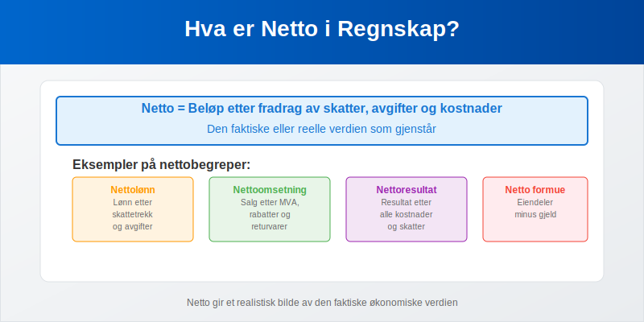
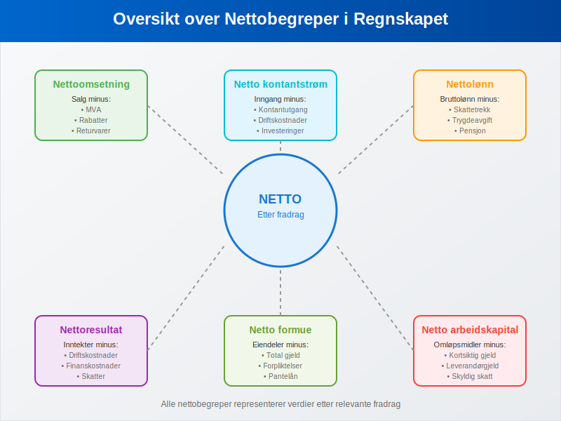
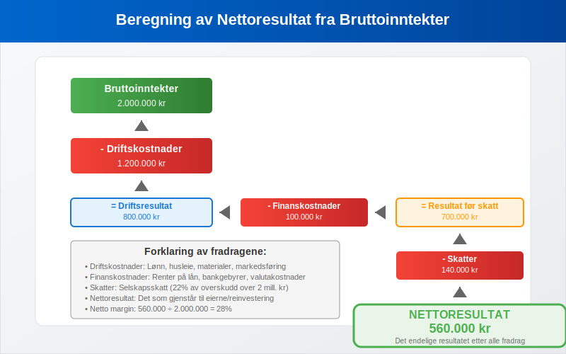
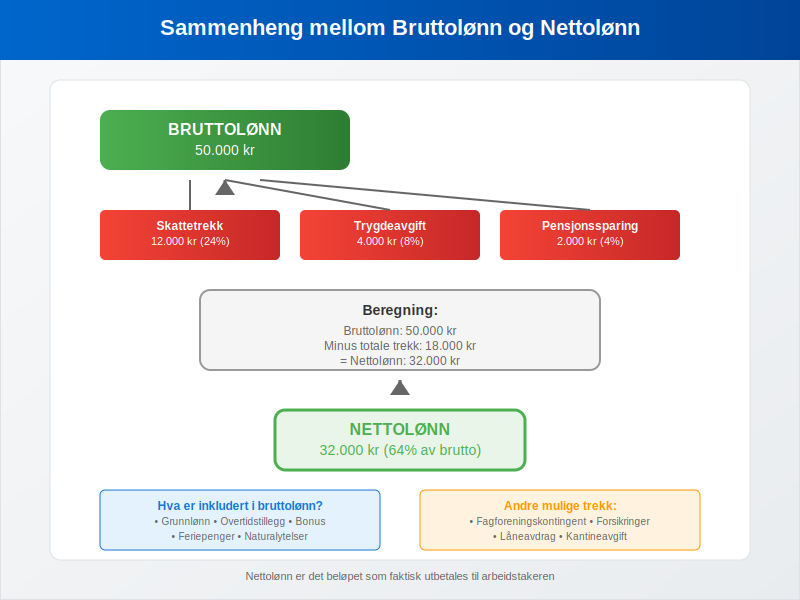
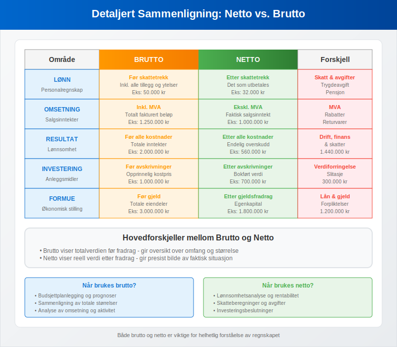
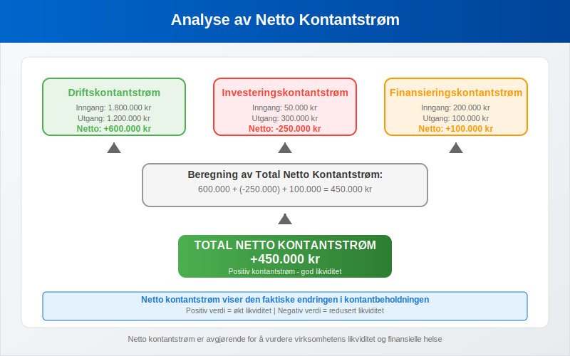
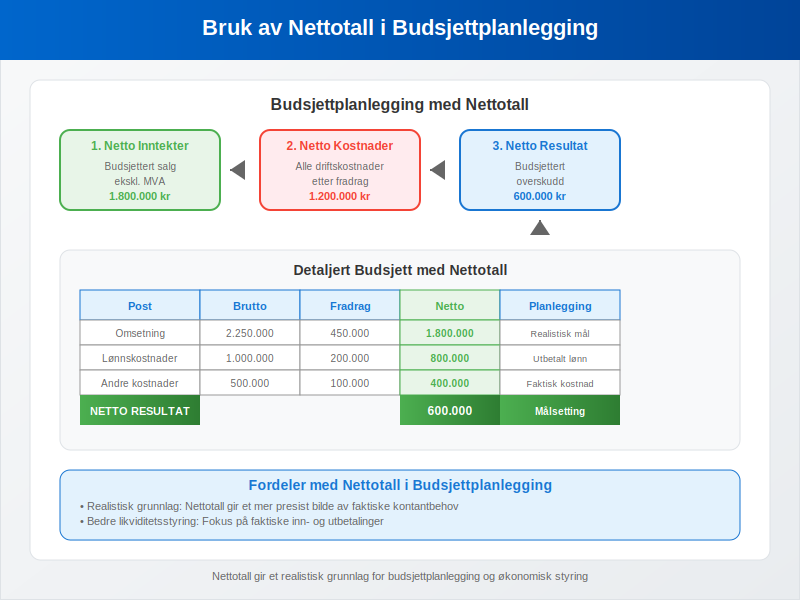
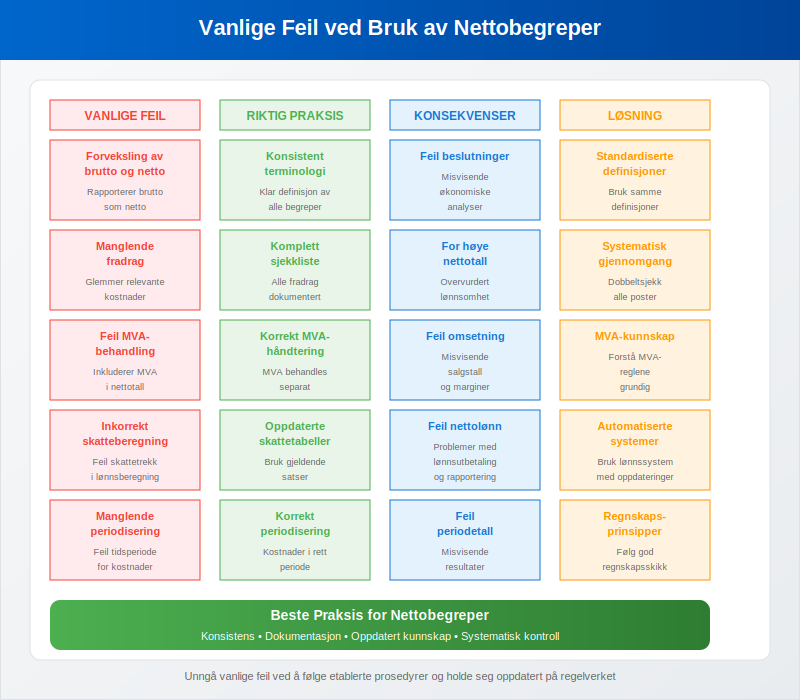

Netto er et fundamentalt begrep i regnskapet som refererer til beløpet som gjenstår etter fradrag av skatter, avgifter, kostnader eller andre reduksjoner. Begrepet står i direkte motsetning til brutto og er avgjørende for å forstå den faktiske økonomiske verdien i regnskapssammenheng.

Hva er Netto?
Netto representerer den endelige eller reelle verdien av et beløp etter at alle relevante fradrag er gjort. Dette gir et mer presist bilde av den faktiske økonomiske situasjonen enn bruttotall. Forståelsen av nettobegrepet er essensielt for:
- Korrekt økonomisk analyse og beslutningsgrunnlag
- Skatteplanlegging og avgiftsoptimalisering
- Lønnsadministrasjon og personaløkonomi – se Hva er Lønn og Hva er Nettolønn?.
- Investeringsvurderinger og lønnsomhetsanalyse
- Sammenligning av reelle økonomiske resultater
- Budsjettplanlegging og prognoser
Grunnleggende Prinsipper
Nettobegrepet bygger på flere viktige regnskapsprinsipper:
- Realiseringsprinsippet: Kun realiserte verdier skal regnskapsføres
- Sammenstillingsprinsippet: Alle tilhørende kostnader skal trekkes fra
- Forsiktighetsprinsippet: Usikre poster skal behandles konservativt
- Substansprinsippet: Det økonomiske innholdet skal reflekteres
Nettobegreper i Regnskapet

Nettoomsetning
Nettoomsetning er salgsinntektene etter fradrag av merverdiavgift, rabatter, returvarer og andre salgsreduksjoner.
Beregning av Nettoomsetning:
Nettoomsetning = Bruttoomsetning - MVA - Rabatter - Returvarer - Salgsreduksjoner
Eksempel: Nettoomsetning
Et selskap har følgende salgstall:
| Post | Beløp (kr) |
|---|---|
| Bruttoomsetning (inkl. MVA) | 1.250.000 |
| MVA (25%) | 250.000 |
| Rabatter gitt | 50.000 |
| Returvarer | 30.000 |
| Nettoomsetning | 920.000 |
Beregning:
- Bruttoomsetning: 1.250.000 kr
- Minus MVA: -250.000 kr
- Minus rabatter: -50.000 kr
- Minus returvarer: -30.000 kr
- Nettoomsetning: 920.000 kr
Nettoresultat
Nettoresultat er det endelige resultatet etter at alle kostnader, skatter og avgifter er trukket fra inntektene.

Formel for Nettoresultat:
Nettoresultat = Bruttoinntekter - Driftskostnader - Finanskostnader - Skatter
Eksempel: Nettoresultat
| Post | Beløp (kr) |
|---|---|
| Bruttoinntekter | 2.000.000 |
| Driftskostnader | 1.200.000 |
| Finanskostnader | 100.000 |
| Skatter | 140.000 |
| Nettoresultat | 560.000 |
Nettolønn
Nettolønn er den lønnen arbeidstakeren faktisk mottar etter fradrag av skatt, arbeidsgiveravgift og andre trekk.

Komponenter som trekkes fra bruttolønn:
- Skattetrekk: Forskuddstrekk av skatt
- Trygdeavgift: Arbeidstakeravgift til folketrygden
- Fagforeningskontingent: Hvis aktuelt
- Pensjonssparing: Obligatorisk tjenestepensjon
- Andre trekk: Forsikringer, lån, etc.
Eksempel: Nettolønn
| Post | Beløp (kr) |
|---|---|
| Bruttolønn | 50.000 |
| Skattetrekk | 12.000 |
| Trygdeavgift | 4.000 |
| Pensjonssparing | 2.000 |
| Nettolønn | 32.000 |
Netto vs. Brutto Sammenligning

| Område | Brutto | Netto | Viktige Fradrag |
|---|---|---|---|
| Lønn | Før alle trekk | Etter alle trekk | Skatt, trygdeavgift, pensjon |
| Omsetning | Inkl. MVA og rabatter | Ekskl. MVA og rabatter | MVA, rabatter, retur |
| Resultat | Før alle kostnader | Etter alle kostnader | Drift, finans, skatt |
| Investering | Før avskrivninger | Etter avskrivninger | Verdiforringelse, slitasje |
| Formue | Før gjeld | Etter gjeldsfradrag | Lån, forpliktelser |
Regnskapsføring av Nettoposter
Nettoomsetning i Regnskapet
Nettoomsetning regnskapsføres som den faktiske inntekten virksomheten oppnår:
Regnskapsføring ved salg:
Debet: Kundefordringer 1.000.000 kr
Kredit: Nettoomsetning 800.000 kr
Kredit: Utgående MVA 200.000 kr
Nettolønn i Lønnsregnskapet
Nettolønn er det som faktisk utbetales til arbeidstakeren:
Regnskapsføring av nettolønn:
Debet: Lønnskostnad (brutto) 500.000 kr
Kredit: Utbetalt lønn (netto) 350.000 kr
Kredit: Skyldig skattetrekk 120.000 kr
Kredit: Skyldig trygdeavgift 30.000 kr
Nettobegreper i Økonomisk Analyse
Netto Arbeidskapital
Netto arbeidskapital er differansen mellom omløpsmidler og kortsiktig gjeld:
Netto arbeidskapital = Omløpsmidler - Kortsiktig gjeld
Eksempel: Netto Arbeidskapital
| Post | Beløp (kr) |
|---|---|
| Kundefordringer | 800.000 |
| Varelager | 600.000 |
| Bankinnskudd | 200.000 |
| Omløpsmidler | 1.600.000 |
| Leverandørgjeld | 400.000 |
| Skyldig skatt | 200.000 |
| Kortsiktig gjeld | 600.000 |
| Netto arbeidskapital | 1.000.000 |
Netto Kontantstrøm
Netto kontantstrøm viser den faktiske kontantbevegelsen i virksomheten:

Netto kontantstrøm = Kontantinngang - Kontantutgang
Komponenter i Netto Kontantstrøm:
- Driftskontantstrøm: Fra løpende drift
- Investeringskontantstrøm: Fra investeringsaktiviteter
- Finansieringskontantstrøm: Fra finansieringsaktiviteter
Netto Nåverdi (NPV)
Netto nåverdi brukes i investeringsanalyse for å vurdere lønnsomhet:
NPV = Σ (Kontantstrøm / (1 + r)^t) - Investering
Der:
- r = diskonteringsrente
- t = tidsperiode
Praktisk Anvendelse av Nettobegreper
I Budsjettplanlegging

Nettotall gir et realistisk grunnlag for:
- Likviditetsplanlegging: Faktiske kontantbehov
- Investeringsbeslutninger: Reell avkastning
- Lønnsomhetsanalyse: Faktisk fortjeneste
- Skatteplanlegging: Skattepliktig resultat
I Økonomisk Rapportering
Nettotall er essensielle i:
- Resultatregnskap: Nettoomsetning og nettoresultat
- Balanse: Netto egenkapital
- Kontantstrømoppstilling: Netto kontantstrøm
- Nøkkeltallsanalyse: Netto marginer og rentabilitet
Nøkkeltall Basert på Netto
Netto Fortjenestemargin
Netto fortjenestemargin (%) = (Nettoresultat ÷ Nettoomsetning) × 100
Netto Egenkapitalrentabilitet
Netto egenkapitalrentabilitet (%) = (Nettoresultat ÷ Gjennomsnittlig egenkapital) × 100
Netto Gjeldsgrad
Netto gjeldsgrad = (Total gjeld - Kontanter) ÷ Egenkapital
Vanlige Feil ved Nettobegreper

Typiske Misforståelser:
- Forveksling av brutto og netto i rapportering
- Manglende fradrag av alle relevante kostnader
- Feil MVA-behandling i omsetningsberegninger
- Inkorrekt skatteberegning i lønnssammenheng
- Manglende periodisering av kostnader og inntekter
Beste Praksis:
- Dobbeltsjekk alle fradrag før nettotall beregnes
- Bruk konsistente definisjoner av nettobegreper
- Dokumenter beregningsmetoder for etterprøvbarhet
- Sammenlign med bransjestandarder for validering
- Oppdater beregninger ved endringer i regelverk
Netto i Ulike Bransjer
Detaljhandel
I detaljhandel fokuseres det på:
- Netto salgsmargin etter rabatter og retur
- Netto lagerverdier etter nedskrivninger
- Netto kontantstrøm fra daglig drift
Tjenesteyting
I tjenestebransjen er viktige nettotall:
- Netto timepriser etter alle kostnader
- Netto prosjektresultat per oppdrag
- Netto kapasitetsutnyttelse av ressurser
Produksjon
I produksjonsbedrifter fokuseres det på:
- Netto produksjonskostnader per enhet
- Netto materialforbruk etter svinn
- Netto kapasitetsutnyttelse av maskiner
Digitale Verktøy for Nettoberegninger
Regnskapssystemer
Moderne ERP-systemer beregner automatisk:
- Nettoomsetning fra bruttosalg
- Nettolønn fra bruttolønn
- Nettoresultat fra alle transaksjoner
- Netto kontantstrøm fra alle bevegelser
Lønnsystemer
Spesialiserte lønnssystemer håndterer:
- Automatisk skattetrekk for nettolønn
- Trygdeavgiftsberegning og andre trekk
- Feriepengeopptjening på nettobasis
- Rapportering til A-melding
Juridiske Aspekter ved Nettobegreper
Bokføringsloven
Bokføringsloven krever at:
- Nettoomsetning skal fremgå klart av regnskapet
- Nettoresultat skal beregnes korrekt
- Alle fradrag skal være dokumentert og lovlige
Skatteloven
Skatteloven definerer hvordan:
- Netto skattepliktig inntekt beregnes
- Fradragsrett for ulike kostnader
- Netto formue skal verdsettes
Regnskapsstandarder
Norske regnskapsstandarder (NGRS) og internasjonale standarder (IFRS) gir retningslinjer for:
- Netto presentasjon av regnskapsposter
- Motregning av eiendeler og gjeld
- Netto rapportering av kontantstrømmer
Sammendrag
Netto er et grunnleggende begrep som representerer den faktiske eller reelle verdien etter alle relevante fradrag. Forståelse av nettobegreper er essensielt for:
- Korrekt regnskapsføring og økonomisk rapportering
- Effektiv økonomisk analyse og beslutningsgrunnlag
- Riktig skatteberegning og avgiftsbehandling
- Realistisk budsjettplanlegging og prognoser
- Sammenligning av økonomiske resultater
Ved å mestre nettobegrepet og dets anvendelser kan virksomheter ta bedre økonomiske beslutninger og sikre korrekt regnskapsføring i henhold til gjeldende regelverk og standarder.